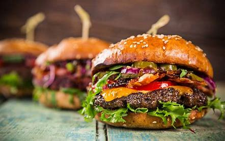

Home
Hamburger

Description
The best burger recipe for summertime grilling! This juicy burger is jam-packed with all kinds of stuff and has no tasteless bread crumbs. Serve on buns with your favorite condiments.
This hamburger recipe is flavorful, juicy, and incredibly satisfying.
ingredient
- Beef:These basic burgers start with 1 ½ pounds of lean ground beef.
- Onion: A finely chopped onion takes the flavor up a notch.
- Cheeses:You will need shredded Colby Jack or Cheddar cheese.
- Egg: An egg lends moisture and helps bind the patties together.
- Seasonings, herbs, and sauce:These hamburgers are flavored with an envelope of dry onion soup mix, fresh garlic, garlic powder, soy sauce, Worcestershire sauce, dried parsley, dried basil, dried oregano, crushed dried rosemary, salt, and pepper.
How to make the best hamburger step-by-step
You will find the full, step-by-step recipe below — but here’s a brief overview of what you can expect when you make the best burgers ever:
- Combine the ingredients in a bowl.
- Make four patties.
- Grill the patties until the juices run clear and the meat is no longer pink in the center.
How Long to Cook Hamburgers
Cooked on a grill heated to high heat, these hamburger patties should be fully cooked after about 4 to 5 minutes per side. You’ll know they’re done when the juices run clear, they’re no longer pink in the center, and an instant-read thermometer reads at least 165 degrees F.
You are now ready to eat, enjoy !